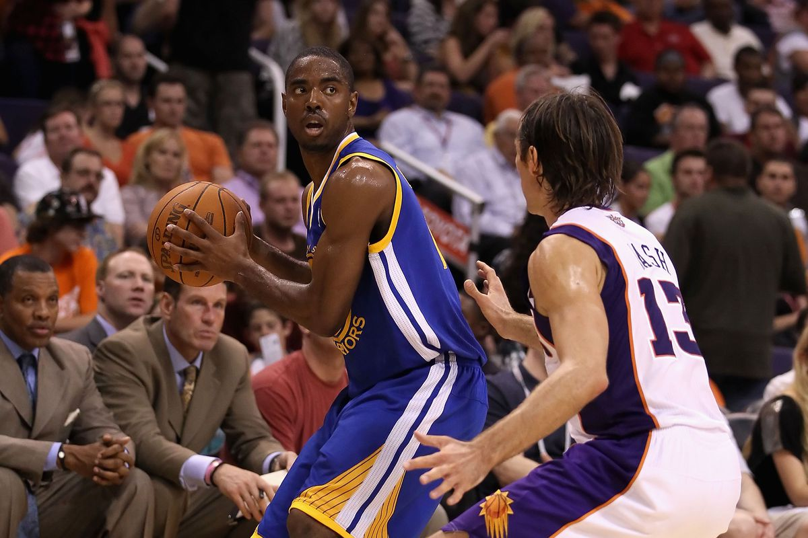
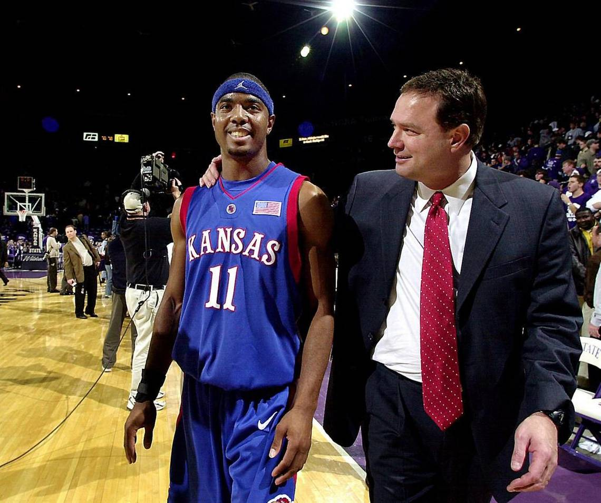
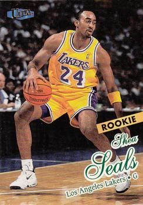
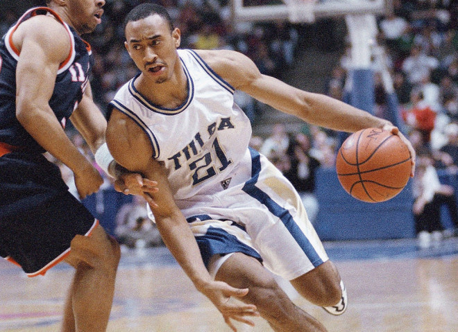

I started playing basketball when I was around six years old. Basketball has always been a massive part of my life. I had two cousins who played in the NBA, one for the Lakers and another for the Golden State Warriors. I started playing in portland Oregon the cisco kids. A small AAU team that my cousin had. Then I moved to Tulsa, Oklahoma, where I played for the Edison Eagles, OK Ballers, Tulsa Titians, and Showtime. After all my high school work, I was offered a basketball scholarship to play at LSUS.
Hers is my cousin Arron Miles is an American basketball coach and former player currently working as an assistant coach for the Boston Celtics of the National Basketball Association (NBA). He played college basketball for the Kansas Jayhawks and had a brief stint in the National Basketball Association (NBA) with the Golden State Warriors. Standing at 6 ft 1 in (1.85 m), he played at the point guard position. Miles was previously an assistant coach for the Florida Gulf Coast Eagles and a head coach for the Santa Cruz Warriors of the NBA G League. In 2019, he was hired as a player development coach with the Golden State Warriors.
 Here is my cousin Shea Seals he is a former professional basketball player. He played in four games during the 1997–98 NBA season as a shooting guard for the Los Angeles Lakers of the National Basketball Association (NBA). He is currently an assistant coach at the University of Tulsa. Seals, who played collegiately for the Tulsa Golden Hurricane men's basketball team and is still their all-time career scoring leader, also played in the ABA with the Indiana Legends and the Kansas City Knights, in the NBDL with the Mobile Revelers, and professionally in France with Villeurbanne and Chalon-sur-Saône. The Tulsa Golden Hurricane have retired Seals' number (#21). He served eight years as the head basketball coach at Booker T. Washington High School in Tulsa, Oklahoma. He is probably best remembered for his performance against Dream Team III on July 6, 1996, the first exhibition game prior to the 1996 Summer Olympics in Atlanta, Dream Team III won the Gold. He scored 20 points, leading all players on both squads, for his Collegiate All-Star team. Despite his amazing game which helped the College Stars build a 17-point lead at the half, Dream Team III managed to win 96–90.
 